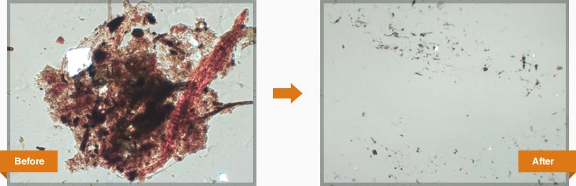
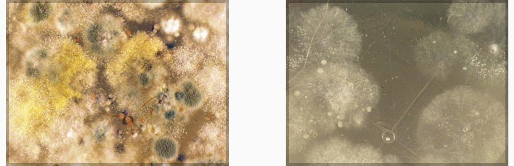

SEE HOW IT WORKS
Helps Block Allergy Irritants & Can Destroy Invading Microorganisms on Contact without Poisoning Them!
Exclusively from Dr. Doormat … the first Antimicrobial treated doormat designed for home use. You track millions of microbes and toxins into your home each day with your shoes. Dr. Doormat helps to block allergens and minimizes the transference of lead, pesticides, dust mites, mold, bacteria, fungus and mildew into your home environment.
These photographs were taken in a lab conducting tests with Dr. Doormat. A swab was taken from the bottom of the shoes and magnified for clarity. The left represents a shoe before having used Dr. Doormat, while the right shows the bottom of the same shoe after wiping twice on Dr. Doormat .

The common doormat is a virtual breeding ground for microbes, including fungus, bacteria, mold, mildew, algae and a host of other unwelcome intruders. The above pictures show the results of a lab study taking a sample from each mat and placing it under a high-powered microscope.
 Here's what a brand new coco fiber mat looked like after one week of normal use. Dr. Doormat in severe aggressive conditions showed 83% reduction in fungus and 70% reduction in bacteria.
In a lab study using an office building with everyday street traffic for a period of over 6 weeks, Dr. Doormat showed 0% growth. Common doormats including Coir (Coco fiber), Rope, wood and attractive personalized ones, became an active breeding ground for microbial growth. We wanted to test Dr. Doormat in the worst conditions imaginable, typical of a construction zone or landscapers environment. In a very aggressive test using heavy top soil on Dr. Doormat there was 83% reduction in fungus and 70% reduction in bacteria compared with regular doormats showing full growth. You may ask why any microbes survived on Dr. Doormat . Dirt has two sides just like all objects, and the side that comes in contact with the mat gets killed while the side that doesn't can naturally still survive. With heavy top soil, some of the microbes became cocooned in the dirt particles and were protected. This is the reason for wiping the mat thoroughly and vacuuming regularly. The difference is tangibly significant.
-
The Dirty Little Secret About The Common Doormat!
Every time you step on your common doormat, you not only step into a reservoir of microbes that grow and infest your mat; the mat also acts as a springboard for the microbes and pollutants to contaminate the soles of your shoes and transport all of the pollutants into your home.
“The First Step Toward A Healthy Home!"® -
Here’s How It Works:
The antimicrobial treatment is like a microscopic layer of swords and spikes acting as a barrier upon the surface of the entire doormat. Microbes are negatively charged individual single cell living organisms. The treated surface of Dr. Doormat is positively charged pulling the negatively charged microbe down upon its sword like a magnet, piercing the cell membrane and destroying the invading microorganism on contact.
The microbes are not poisoned; instead the technology used by Dr. Doormat has been safely used in medical draperies, disposable diapers and other consumer products for the past 30 years, destroying the microbes with a physical mode of action. Dr. Doormat helps significantly reduce the track-in of allergens, lead, and pesticides, reducing mold, bacteria, fungus and mildew on contact. Your home is your sanctuary. Help keep your home as healthy and safe for your family as possible.